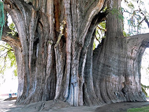

| 1 |
Hyperion
|
Coast redwood
(Sequoia sempervirens
(D. Don) Endl.) |
United States, California |
115.85 m |
| 2 |
Menara
|
Shorea
faguetiana |
Malaysia, Sabah |
100.8 m |
| 3 |
Centurion
|
Mountain ash
or swamp gum
(Eucalyptus regnans
F.Muell.) |
Australia,Tasmania |
99.82 m |
| 4 |
Doerner Fir
|
Coast Douglas fir
(Pseudotsuga menziesii
var. menziesii) |
United States, Oregon |
99.75 m |
| 5 |
Raven's Tower

|
Sitka spruce
(Picea sitchensis
(Bong) Carr.) |
United States, California |
96.7 m |
| 6 |
Tallest Giant Sequoia
in California Basin
|
Giant sequoia
(Sequoiadendron
giganteum
(Lindl.) J.Buchh.) |
United States, California |
95.8 m |
| 7 |
Cypress Tree
near Baylangdra Ney

|
Bhutan weeping cypress
(Cupressus corneyana
Carrière) |
Bhutan, Wangdue Phodrang District |
94.6 m |
| 8 |
Sir Vim
(One of the White Knights)
|
Manna gum or white gum
(Eucalyptus viminalis
Labill.) |
Australia, Tasmania |
91.3 m |
| 9 |
Neeminah
Loggorale Meena
|
Tasmanian blue gum
(Eucalyptus globulus
Labill.) |
Australia, Tasmania |
90.7 m |
| 10 |
Boreas
|
Australian oak
(Eucalyptus obliqua
L’Hér.) |
Australia, Tasmania |
88 m |